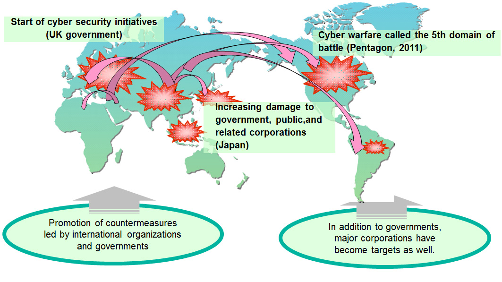

Ali Majidi
Ali Majidi
yesterday
What's a Cyber attack?

Simply put, a cyber attack is an attack launched from one or more computers against another computer, multiple computers or networks. Cyber attacks can be broken down into two broad types: attacks where the goal is to disable the target computer or knock it offline, or attacks where the goal is to get access to the target computer's data and perhaps gain admin privileges on it.  The borderlessness of the scope of unauthorized access and the sophistication and diversity of threats aimed at illegal information access have escalated. Although most government agencies and major corporations have fully deployed individual tools as information security measures, targets of attacks have expanded to include, other than government institutions, critical infrastructures and specific industries and corporations, calling for more robust counter measures.